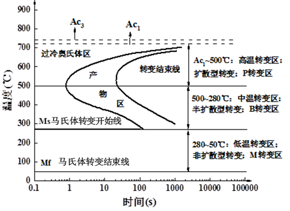
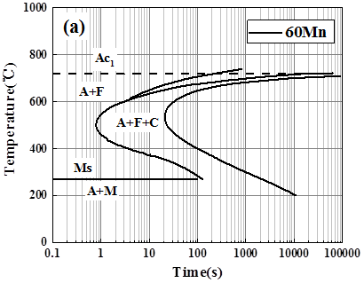
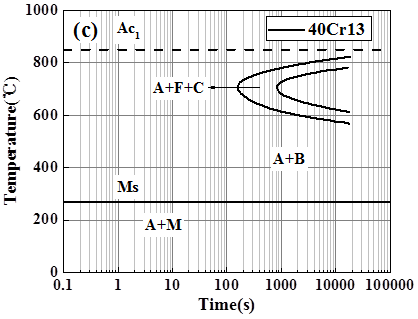
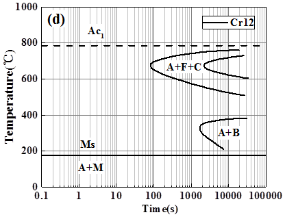

基于机器学习的钢过冷奥氏体动态转变TTT曲线预测模型
TTT Curve Prediction Model Based on Machine Learning
利用机器学习算法预测钢的过冷奥氏体等温转变曲线，为热处理工艺设计提供科学依据
TTT曲线的基本概念
TTT曲线：钢的过冷奥氏体等温转变曲线，能够直观反映过冷奥氏体在等温条件下的转变产物、转变量、转变时间和转变温度之间的关系。

图1 共析碳钢TTT曲线（示意图）
图上共分高温转变区、中温转变区和低温转变区三部分，包括以下关键信息：
奥氏体转变临界温度
Ac1 / Ac3
马氏体转变开始温度
Ms
马氏体转变结束温度
Mf
珠光体转变开始线
Ps
珠光体转变结束线
Pf
贝氏体转变开始线
Bs
贝氏体转变结束线
Bf
温度转变区
高温转变区
珠光体转变区域
中温转变区
贝氏体转变区域
低温转变区
马氏体转变区域
影响因素
TTT曲线主要受钢的成分、奥氏体化条件和热处理参数等的影响，其中最主要的影响因素是合金元素。合金元素的加入产生了合金元素与铁、碳及合金元素之间的相互作用，改变了钢铁中各相的稳定性（即相转变线的形状与位置）。
TTT图预测软件
基于WEKA中的机器学习算法，建立了TTT图预测软件，该软件实现了用户输入钢的成分和奥氏体化温度输出TTT曲线的功能。
机器学习算法
Bagging
Random Forest
Random Tree
Random Committee
IBK
支持的钢种类型
由于成分的复杂影响，不同钢种之间的TTT曲线（即相转变线的形状与位置）存在较大差异。本工作目前已经实现以下四种钢的TTT曲线的预测功能：
碳钢及低合金钢
含非或弱碳化物形成元素，合金元素总含量 < 5% wt
中合金钢
合金元素总含量 5% ~ 10% wt
不锈钢
具有耐腐蚀性能的特殊钢种
高合金钢
非不锈钢，合金元素总含量 > 10% wt



图2 典型TTT曲线示例（不同钢种）
软件功能特点
- 输入钢的化学成分和奥氏体化温度
- 自动预测并生成TTT曲线
- 支持多种钢种的曲线预测
- 基于多种机器学习算法的集成预测
- 直观的曲线可视化展示
- 为热处理工艺设计提供科学依据
应用价值
热处理工艺优化：通过准确预测TTT曲线，可以优化热处理工艺参数，提高材料性能，降低生产成本。
该预测模型的主要应用价值包括：
- 快速预测不同成分钢的TTT曲线，减少实验工作量
- 指导热处理工艺设计，确定合理的等温温度和时间
- 预测钢的组织转变行为，优化材料性能
- 为新钢种开发提供理论依据
- 辅助材料工程师进行工艺参数选择